Outlier Detection in Time Series Signals
Bugra Akyildiz@bugraa
bugra.github.io

Data problems
- Missing Observations
- Noise
- Electrical Hum
- Outliers
Outliers
- Logistical Problems
- Data transmission or transcription.
- Experimental Errors
- Erroneous Procedures
- Measurement Errors
- Wrong Data Entry
- Component Failures
What is it?
The problem, as always, is what the heck does one mean by "outlier" in these contexts. Seems to be like pornography -- "I know it when I see it." - Berton Gunter, R-help, December 2009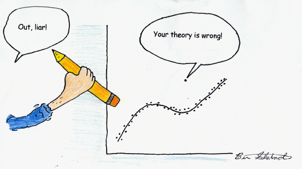
Outlier Definition
An observation in a data set which appears to be inconsistent with the remainder of that set of data
Toy Example
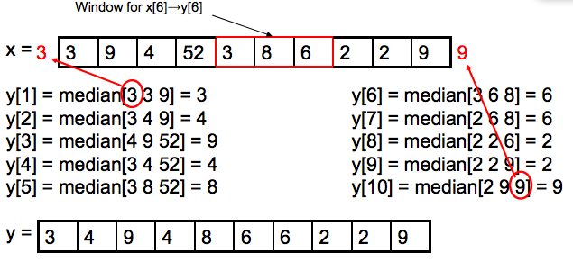- Window size: $w$ = 3
- Extend left-most and right-most values to compute boundaries
Signal with Outliers
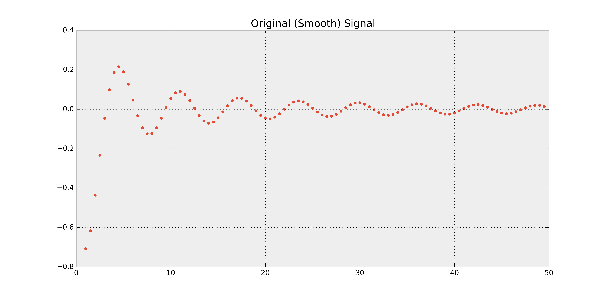 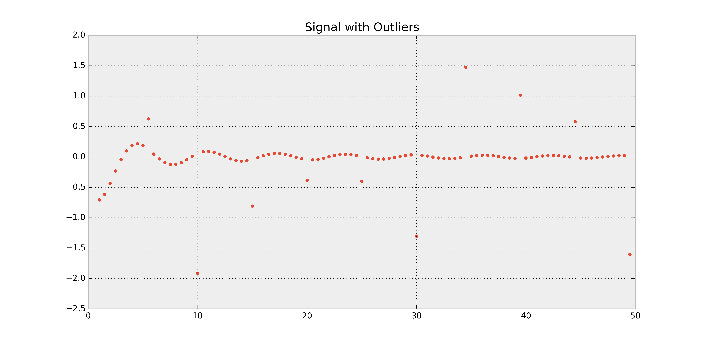Median Filtered Signal
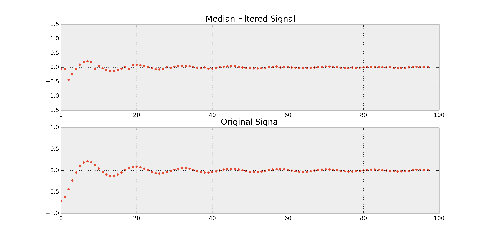Know Your Tools
Fast Fourier Transform (FFT)
Noise Removal
Outlier Detection
FFT Block
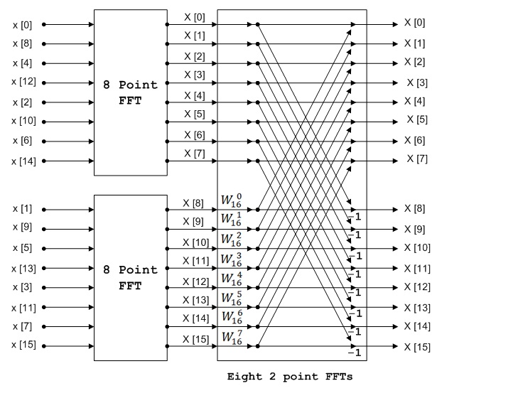Fourier Expansion
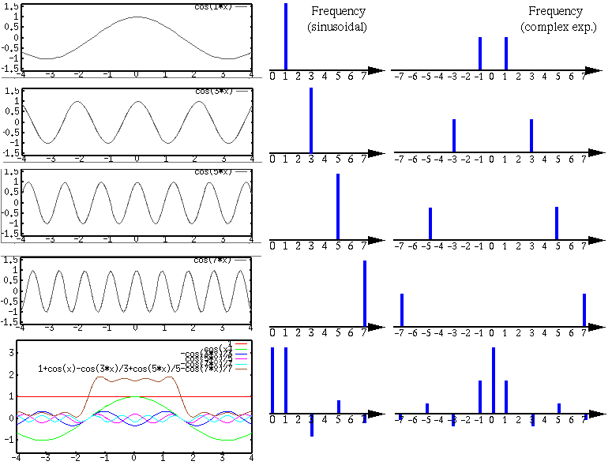Fourier Expansion Square Wave
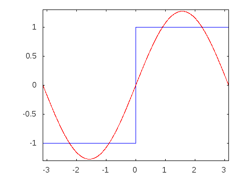Fourier Transform Visualization

FFT for Noise Removal
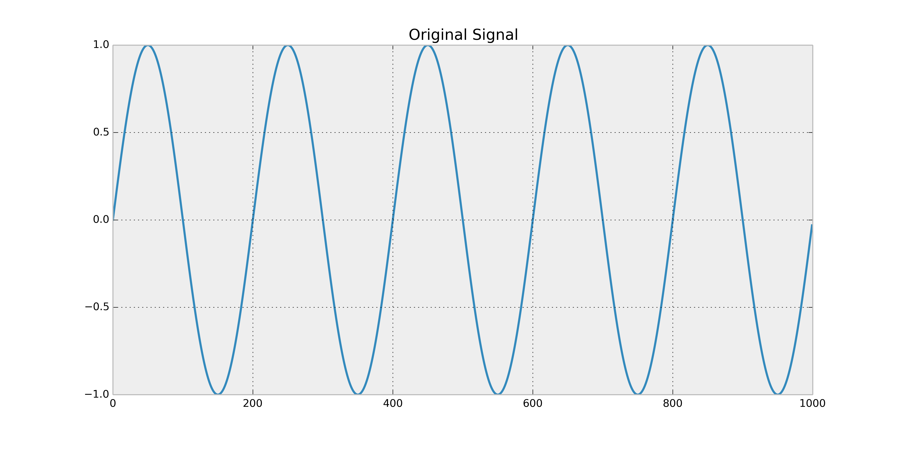 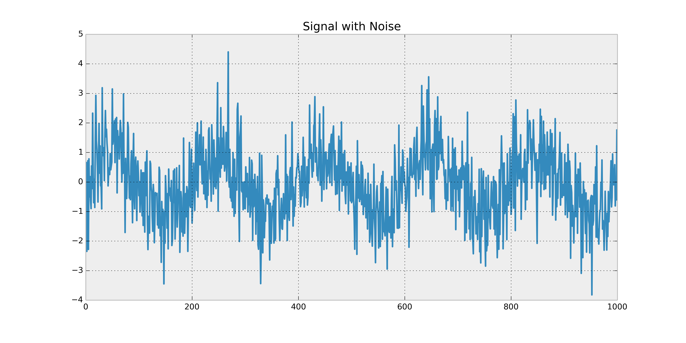Frequency Response
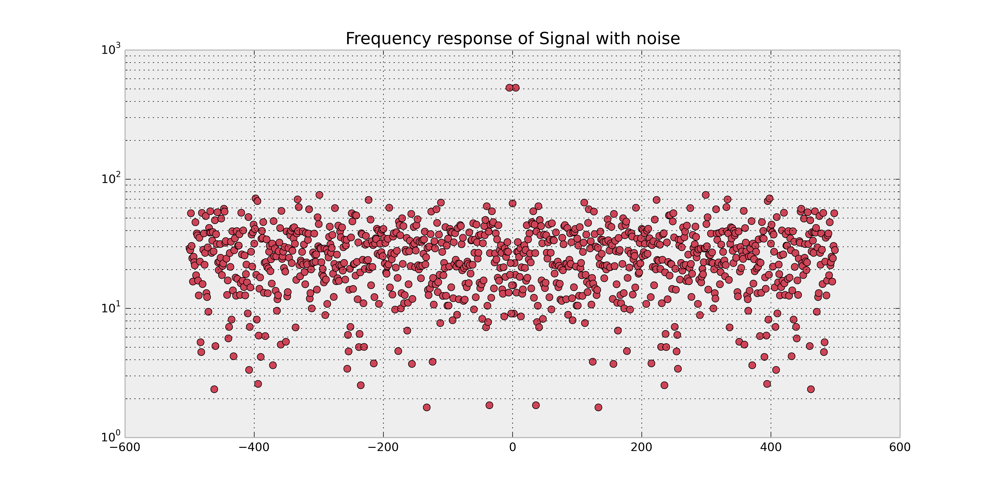Frequency Response of Filtered Signal

Outliers detected by FFT
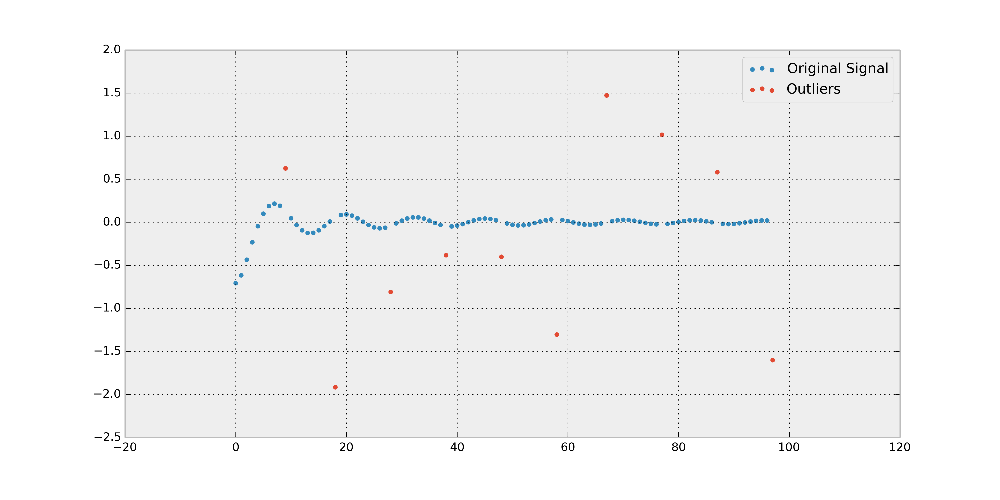Outlier Detection via Monte Carlo Markov Chain
- Monte Carlo Sampling: To estimate characteristics of a distribution
- Mean
- Variance
- Kurtosis
- Markov Chain: Stochastic process to sample different _states_ from a stationay distribution
- MCMC: Design a Markov Chain in such a way that the stationary distribution is the distribution that we want to estimate (target distribution)
Basic Metropolis Sampler
n_iterations = 100000
burn_in = 20000
t = np.zeros(n_iterations)
ii = 0
sigma = 1.
t_previous = np.random.randn()
posterior_distribution = lambda x: np.exp(-x * x/2.)
proposal_distribution = lambda mu, sigma: sigma * np.random.randn() + mu
while ii < n_iterations:
t_proposed = proposal_distribution(t_previous, sigma)
proposed_posterior = posterior_distribution(t_proposed)
previous_posterior = posterior_distribution(t_previous)
acceptance_criterion = np.min([proposed_posterior / previous_posterior, 1.0])
temp = np.random.rand()
if temp < acceptance_criterion : # acceptance criteria
t[ii]=t_proposed
t_previous=t_proposed
else:
t[ii]=t_previous
ii += 1
Original Signal and Signal with Outliers
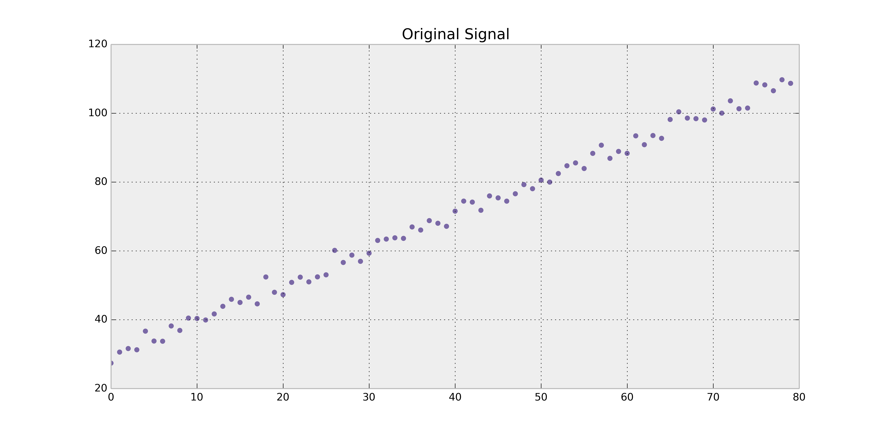 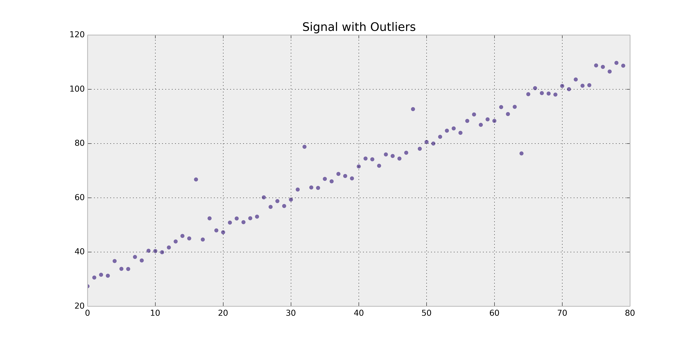
Box Plot of Outlier and Original Signal
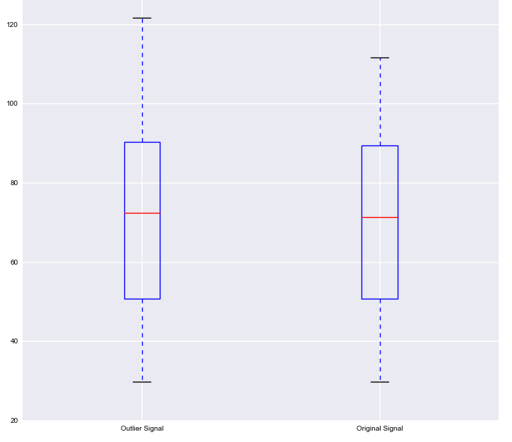Why this is important?
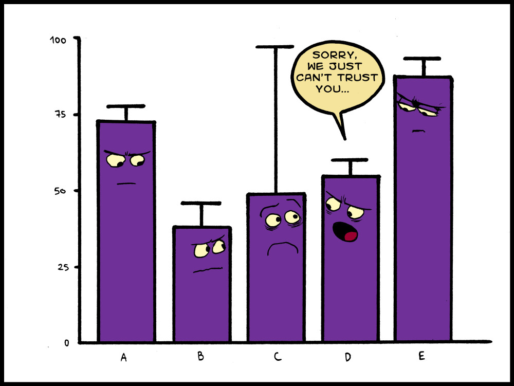Outliers are captured via MCMC
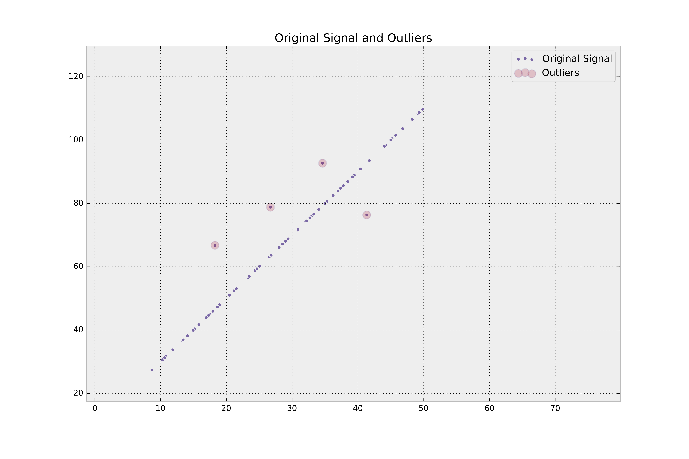Advantages
- As long as the model is nicely captured, the priors do not have to be known beforehand. The data leads the way.
- If priors are known, they could be incorporated into the model whereas other models cannot use prior information.
- Probabilistic, you could reason about probabilities whereas frequentist approaches do not provide a similar functionality like Bayesain methods.
- One can build complex models in Bayesian setting whereas this is not possible for Frequentist methods as you depend on the method rather than models.
Disadvantages
- You need to design priors, models and inference schema beforehand whereas you do not need to do these things in frequentist methods.
- Generally both computation and algorithm-wise, frequentist approaches tend to be faster and simpler.

Credits
- http://xkcd.com/
- http://1ucasvb.tumblr.com/